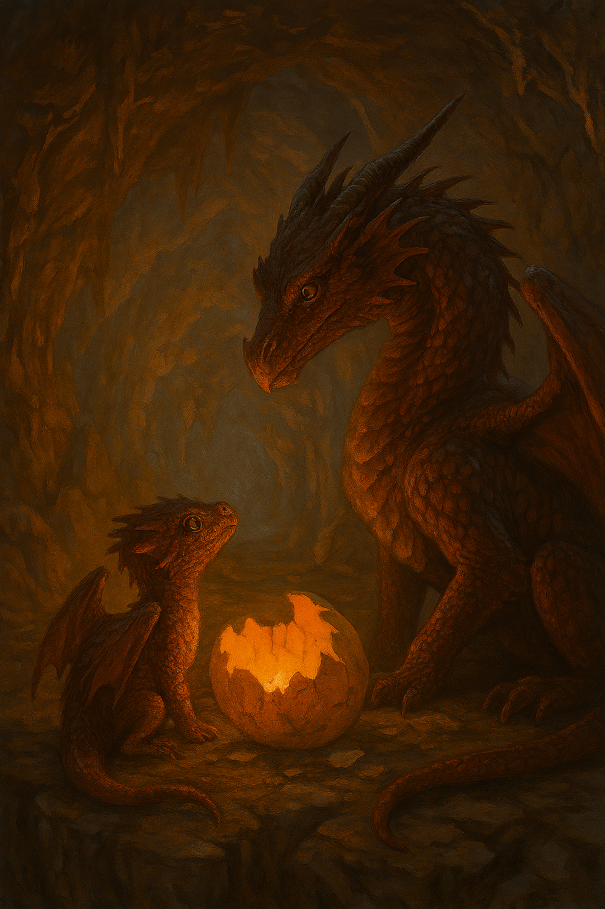
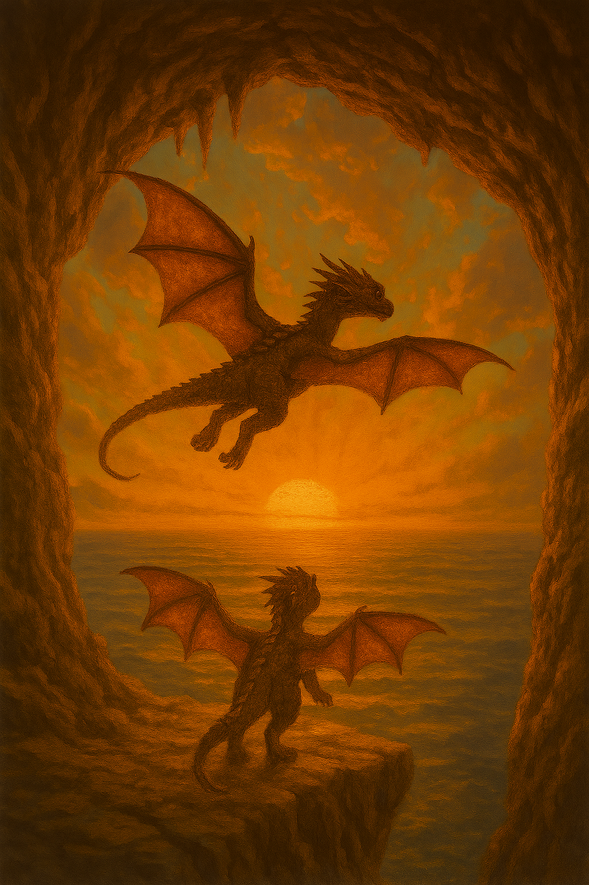
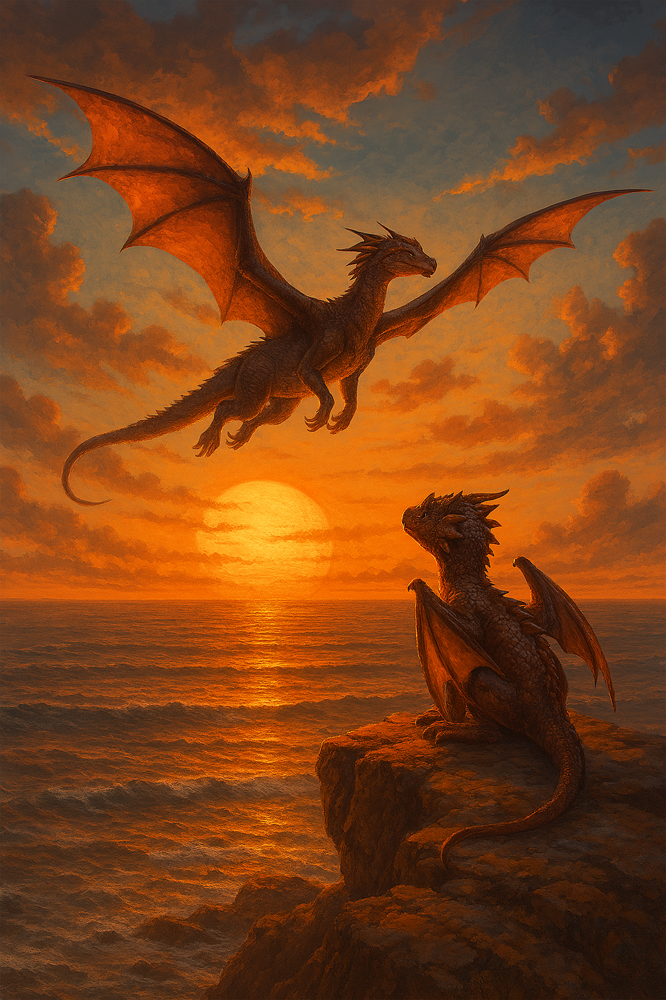
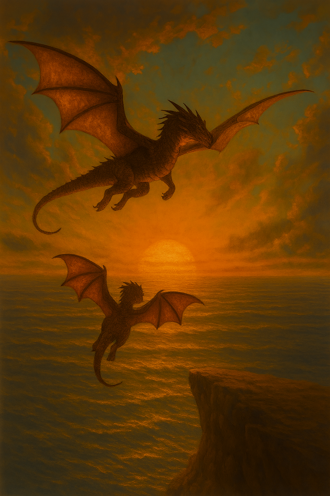

Mamman tittar kärleksfullt på sin barn som nyligen kläckts. Barnet tittar upp på sin mamma med nyfikna ögon.

Draken börjar utforska sin omgivning, vingarna är fortfarande små och ostadiga.

Drakungen sitter och tittar på sin mamma som flyger över himlen, drakungen önskar att den också kunde flyga.

Drakungen försöker flaxa med sina små vingar, till slut lyckas den lyfta från marken. mamman är så stolt över sitt barn.
